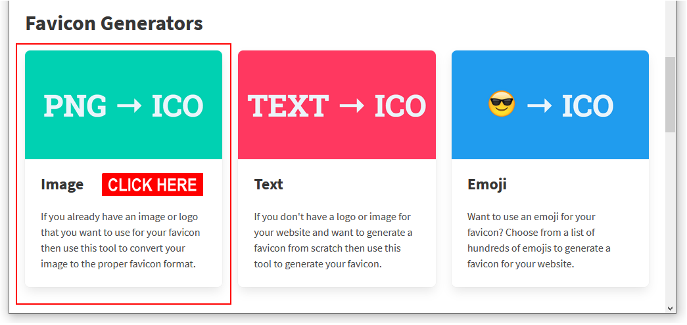
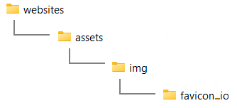
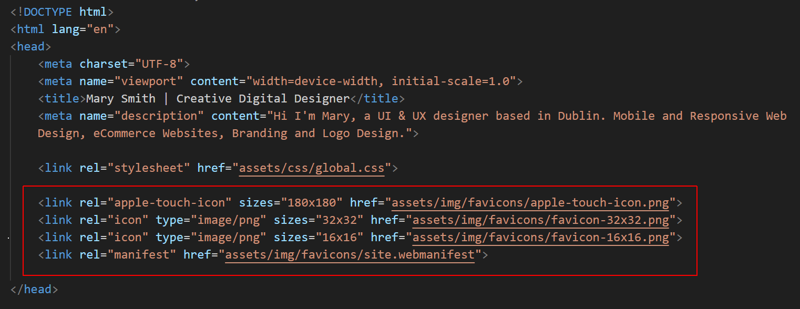
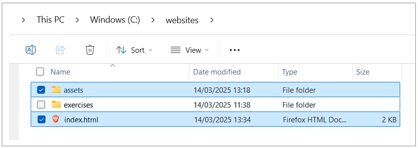

Learning Goals
At the end of this Tutorial, you will be able to:
- Creating a favicon using an online service.
- Inserting a favicon into the <head> of a web page.
About favicons
A favicon is a small icon (really a set of icons for different screens) that is displayed in a browser's tab, address bar, bookmarks/favorites, and sometimes within search engine results. See the examples below.

Favicons help users quickly recognise and differentiate between websites.
Benefits of using a favicon
- Brand Recognition: A favicon reinforces brand identity by showing a small logo or recognisable image that aligns with the website’s branding.
- Improved User Experience: Favicons make it easier for users to identify and switch between open tabs, especially when they have multiple tabs open.
- Professional Appearance: A favicon gives a website a polished and complete look, adding to its overall credibility and professional feel.
- Increased visibility in bookmarks/favorites and search: When users bookmark/favorite a website, the favicon appears alongside the site name, making it easier to locate. Some search engines also display favicons next to results, enhancing the website's presence.
Need for different versions of a favicon
A single favicon size may not suit all devices (desktops/laptops, tablets and mobiles) and operating systems (Windows, MacOS and Android). Therefore, multiple versions of a favicon image are necessary:
- Different sizes: Standard favicon sizes include 16x16, 32x32, 48x48, and larger resolutions like 180x180 for high-resolution displays. A variety of sizes ensures that the icon looks sharp and correctly scaled on different devices.
- Different formats: Common formats include .ico, .png, and .svg. The .ico format is widely used for desktop browsers, while .png is often used for mobile and high-resolution screens. Apple devices typically require a 180x180 .png file.
- Support for pinned and saved icons: Apple and Android devices may display website icons in shortcuts or app-like tiles when users add a website to their home screens. These icons often require specific dimensions and formats to look appealing.
Including multiple versions of a favicon allows a website to adapt to different contexts, providing a consistent and high-quality visual experience across all devices and platforms.
Adding a favicon to your Home page
Follow the steps below to add a favicon to your index.html file:
- Create a square .png image of at least 260x260 pixels. For best results, use an image of 512x512 pixels. This ensures the image can downscale to other dimensions for different devices. If you want your favicon to have a transparent background, upload it to an online service such as https://removal.ai. For example:
- Go to the free Favicon Generator website at the following web address: https://favicon.io
- Choose the PNG -> ICO option. 
- On the next screen, upload the image you want to use as your favicon.
- After a few moments, a Download button will appear. Click on it.
- Copy your downloaded ZIP to the assets/img sub-folder of your 'main' websites folder. The file should be named favicon_io.zip.
- Unzip the ZIP file to create a new sub-folder called 📁 favicon_io. You can now delete the downloaded favicon_io.zip file. Your folder structure should now look as follows. 
- Inside the new 📁 favicon_io sub-folder you should see the following files.
- android-chrome-192x192.png
- android-chrome-512x512.png
- apple-touch-icon.png
- favicon-16x16.png
- favicon-32x32.png
- favicon.ico
- site.webmanifest
- By convention, the standard name for the folder containing favicons files is 📁 favicons. So rename your 📁 favicon_io folder as shown below.
- Copy-and-paste the following code to your 'home page' index.html file to just before the closing </head> tag.
See below. <link rel="apple-touch-icon" sizes="180x180" href="assets/img/favicons/apple-touch-icon.png"> <link rel="icon" type="image/png" sizes="32x32" href="assets/img/favicons/favicon-32x32.png"> <link rel="icon" type="image/png" sizes="16x16" href="assets/img/favicons/favicon-16x16.png"> <link rel="manifest" href="assets/img/favicons/site.webmanifest">
Favicons and relative URLs
As you can see from the above, the various favicon files are linked to your index.html web page using a relative URL (web address). By 'relative' is meant 'in relation to'. See below.
href="assets/img/favicons/apple-touch-icon.png"
If you wanted to add your favicons to any of the web pages in your 📁 exercises folder, you would need to change the URLs as follows for all your favicon files:
href="../assets/img/favicons/apple-touch-icon.png"
Or simply copy-and-paste the following into page-1.html or other exercise files:
<link rel="apple-touch-icon" sizes="180x180" href="../assets/img/favicons/apple-touch-icon.png">
<link rel="icon" type="image/png" sizes="32x32" href="../assets/img/favicons/favicon-32x32.png">
<link rel="icon" type="image/png" sizes="16x16" href="../assets/img/favicons/favicon-16x16.png">
<link rel="manifest" href="../assets/img/favicons/site.webmanifest">
Uploading your work to GitHub
Your final task is to upload your work to your account on GitHub.

Because your upload includes a folder and not just files, you must use the drag-and-drop method rather than the file select method.
- Open a new tab in your web browser and go to github.com. If you are not already signed in to your GitHub account, sign in now.

- On your GitHub home page, click the name of the repository (‘repo’) that holds your web pages. Its name will look as follows, where username is your chosen username on GitHub. username.github.io
- On the next GitHub screen displayed, near the right of the screen, you can see a button named Add file. Click on it.

- From the dropdown list displayed, choose the option Upload files.

- In File Explorer (Windows) or Finder (Apple Mac), drag-and-drop your index.html file and your 📁 assets sub-folder to upload them to your repository on GitHub. 
- Scroll down to the bottom of the GitHub screen, and accept or edit the short message (Add files via upload) in the Commit changes box.
- Finally, click the green Commit changes button to upload your files.

Your home page with a favicon is now published on GitHub at a web address similar to the following, where username is the username you have chosen for your GitHub account:
https://username.github.io/index.html
Or simply:
https://username.github.io
It may take a few minutes for your uploaded files to appear on GitHub.